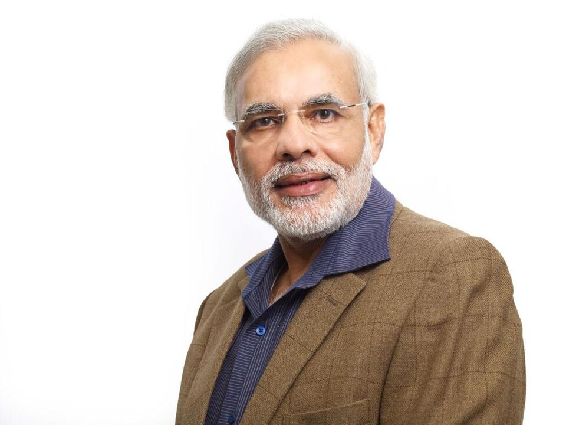

कश्मीर अब स्थानीय आतंकियों से पूरी तरह मुक्त: गृह मंत्री अमित शाह
लश्कर कमांडर लतीफ भट के मारे जाने के बाद केंद्रीय गृह मंत्री अमित शाह ने कहा कि कश्मीर अब स्थानीय स्तर पर भर्ती किए गए आतंकवादियों से मुक्त हो गया है।
केंद्रीय गृह मंत्री अमित शाह ने कहा है कि लश्कर-ए-तैमतौर के कमांडर लतीफ भट के मारे जाने के बाद कश्मीर घाटी अब स्थानीय स्तर पर भर्ती आतंकवादियों से पूरी तरह मुक्त हो गई है। एक आतंकवाद विरोधी सम्मेलन को संबोधित करते हुए शाह ने आतंकवाद, संगठित अपराध और नशीले पदार्थों से जुड़ी समस्याओं से निपटने के लिए विदेशों में छिपे अपराधियों को भारत वापस लाने की आवश्यकता पर भी जोर दिया। उन्होंने देश भर के पुलिस बलों द्वारा समन्वित कार्रवाई के उदाहरण के रूप में पॉपुलर फ्रंट ऑफ इंडिया (PFI) के नेटवर्क को ध्वस्त किए जाने का जिक्र किया।
सुरक्षा बलों ने कुलगाम जिले में एक हफ्ते तक चले तलाशी अभियान के बाद लश्कर कमांडर लतीफ भट को मार गिराया। अधिकारियों के अनुसार, 11 नवंबर को अखरान में सीआरपीएफ चौकी पर हुए हमले के बाद यह अभियान तेज किया गया था, जिसमें तीन जवान घायल हो गए थे।
खुिया इनपुट और सीसीटीवी फुटेज के आधार पर सुरक्षा बलों ने भट और उसके सहयोगी उमर निसार डार का पता लगाया था। 16 नवंबर को एक मुठभेड़ में डार मारा गया था, जबकि भट भाग निकलने में सफल रहा था। इसके बाद 18 नवंबर को सुरक्षा कर्मियों ने जंगालपोरा गांव की एक मस्जिद में छिपे भट को घेर लिया और आत्मसमर्पण की अपील की, लेकिन उसके न मानने पर सुरक्षा बलों की कार्रवाई में वह मारा गया।
और पढ़ें
 राष्ट्रीय
राष्ट्रीयपरिसीमन नोटबंदी से भी बड़ी आपदा साबित होगा, शशि थरूर ने दी चेतावनी
कांग्रेस नेता शशि थरूर ने परिसीमन को लेकर केंद्र सरकार पर निशाना साधा है। उन्होंने कहा कि यह नोटबंदी से भी बड़ी आपदा साबित होगी और इसके असर लंबे समय तक रहेंगे।
राष्ट्रीयचेन्नई में हुआ अनिरुद्ध रविचंदर और काव्या मारन का वेडिंग रिसेप्शन, उपराष्ट्रपति हुए शामिल
म्यूजिक कंपोजर अनिरुद्ध रविचंदर और सनराइजर्स हैदराबाद की सह-मालिक काव्या मारन का चेन्नई में वेडिंग रिसेप्शन आयोजित हुआ। इस समारोह में उपराष्ट्रपति सी.पी. राधाकृष्णन, रजनीकांत और एम.के. स्टालिन समेत कई हस्तियां शामिल हुईं।

राष्ट्रीयउत्तर प्रदेश में सुधरा महिला सुरक्षा का माहौल, रात में भी लौट रहीं बेटियां: PM मोदी
प्रधानमंत्री नरेंद्र मोदी ने उत्तर प्रदेश में महिला सुरक्षा की स्थिति पर संतोष जताया है। उन्होंने कहा कि राज्य में अब बेटियां रात 11 बजे भी काम से सुरक्षित घर लौट रही हैं।
राष्ट्रीयसहारनपुर में सर्किट हाउस के दौरान एआईएमआईएम प्रमुख असदुद्दीन ओवैसी को मिला गार्ड ऑफ ऑनर
उत्तर प्रदेश के सहारनपुर में प्रोटोकॉल की चूक के कारण एआईएमआईएम प्रमुख असदुद्दीन ओवैसी को सुप्रीम कोर्ट के जज के लिए आरक्षित गार्ड ऑफ ऑनर दे दिया गया।